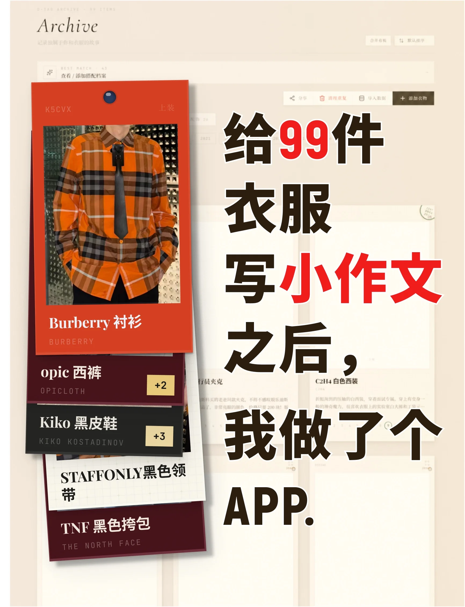
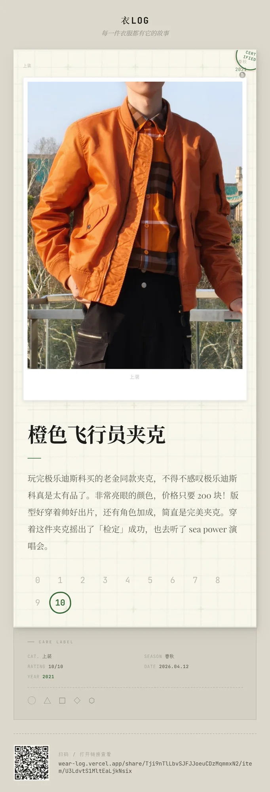

Wearlog 衣LOG · 为什么做
个人项目
2026


起点 · 给 99 件衣服写小作文
备忘录里写了多年的「模子の衣柜」——每件衣服的信息，和它们的故事。
现在 · 一个有人味的产品
wearlog.cn · 档案 / 搭配 / 穿衣规律 / 颜色分析
私人习惯做成产品，审美不靠「让 AI 自由发挥」：拟物材质、吊牌语言、设计系统，一处一处调出来。
从一个真实习惯出发，
做一个自己会天天用的东西。
备忘录里多年的「模子の衣柜」，是 Wearlog 的起点。
P.18